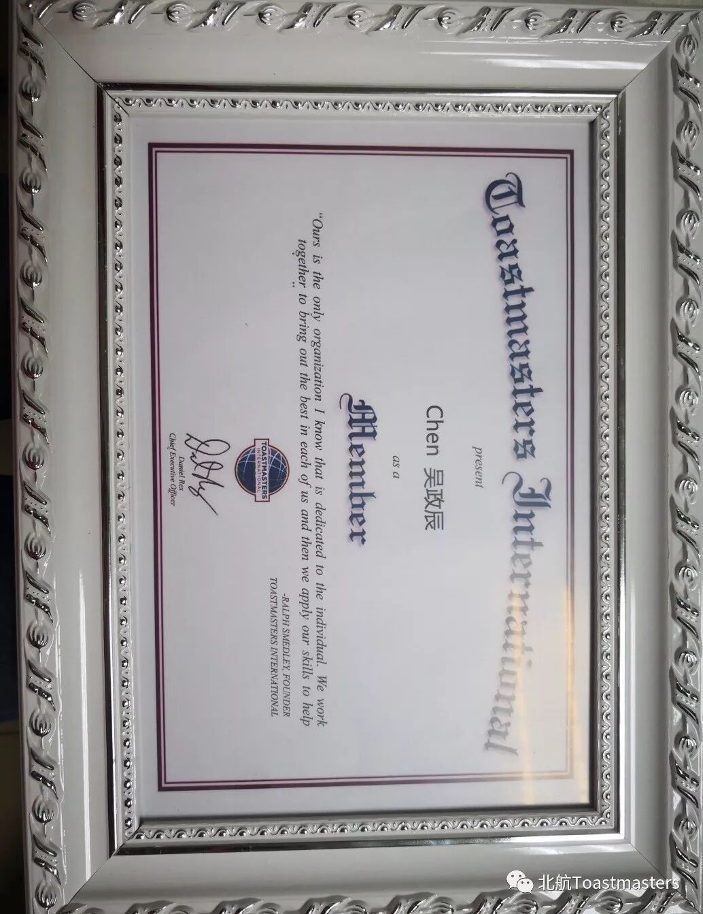
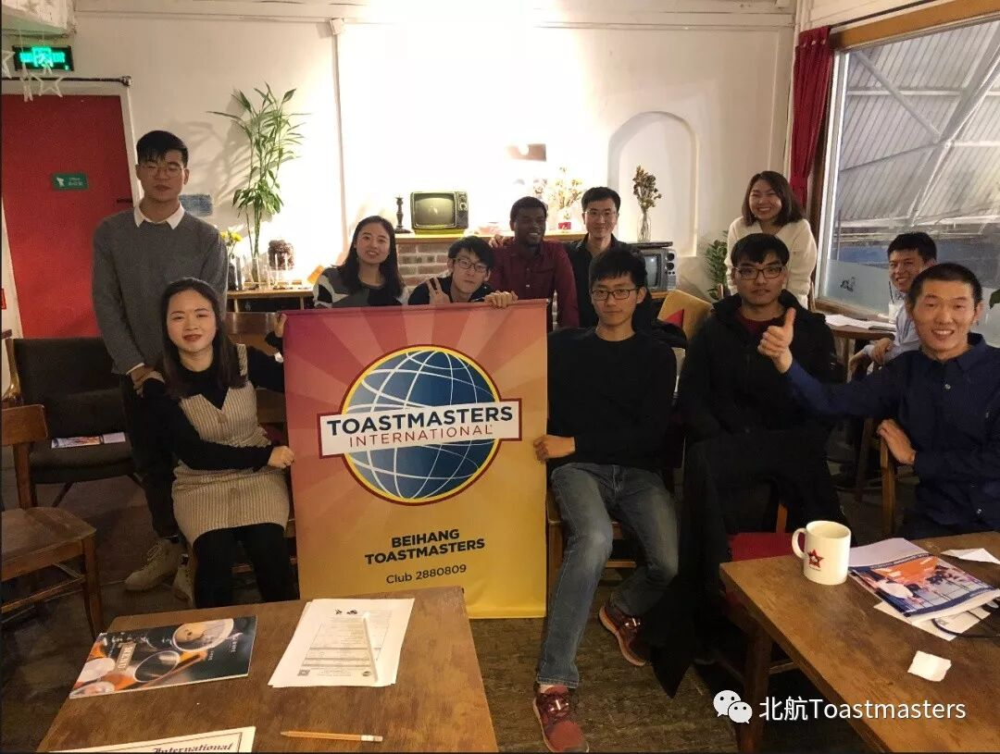

昨晚，北航头马俱乐部在校内雕刻时光咖啡厅举行了一场别开生面的会议——官员选举。
按照惯例，俱乐部每隔六个月都会进行一场官员竞选会议，通过选拔新会员担任俱乐部的重要角色，完成俱乐部管理层的一次更新，也为每个会员提供一次充分锻炼自己的机会。这一次一共有7个职位，全体会员都有资格参与竞选。
当日的海报 @ Ellen
不过在竞选前，我们首先为本学期的新会员举行了一场小小的欢迎仪式（不要问为什么到学期末了我们才举行欢迎仪式，而不是欢送仪式）。当然这里并没有合照。但是我们为每个会员们精心准备了一个非常棒的证书，当当当当~

竞选开始！
根据规则，每一个职位的竞选者需要在大家面前进行3分钟左右的演讲，然后由听众不记名投票，最终确定选举结果。
根据现场来看，每一个职位都有2-3位竞争者，场面充满了火药味。也因此，我们的活动最终延迟四十分钟才结束。
竞选精彩片段 @Cynthia
经过今晚激烈的竞逐，北航下一届 服务团队 诞生了~
竞选结果如下：
竞选结果
主席：Michael（孙兆永）
教育副主席：Cynthia(万月颖)
会员副主席：Jack(傅晓城)
公关副主席：Chen(吴政辰)
财务官：Ellen(张婷玉)
秘书长：Yang(吴辉阳)
接待官：Kaiyuan(田开元)
恭贺以上7位新科”官员“，也同时感谢半年来给予北航俱乐部支持的各界朋友，有你们的支持，北航TMC的明天会更加精彩！
期待新的服务团队创造新的辉煌，让我们拭目以待吧！

最后来一张合照

图片|Cynthia
视频|Cynthia
编辑|Chen
文案|Chen
原文链接（公众号关闭后可能失效）：
https://mp.weixin.qq.com/s/fME4M6rNmOMuST1Ox0xttg
https://mp.weixin.qq.com/s/fME4M6rNmOMuST1Ox0xttg
第 497/539 篇 · 北航Toastmasters英文演讲俱乐部公众号存档
本页为抢救式本地归档，图文已永久保存。
本页为抢救式本地归档，图文已永久保存。